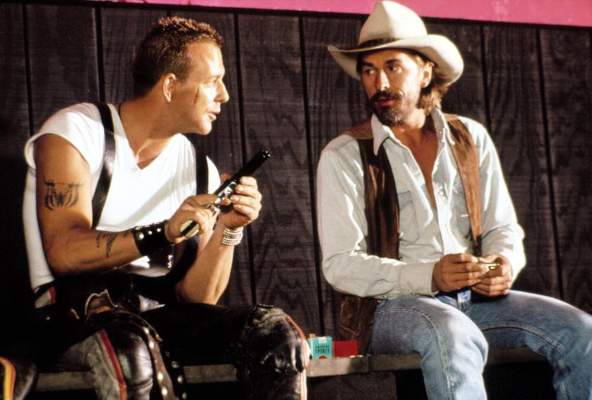
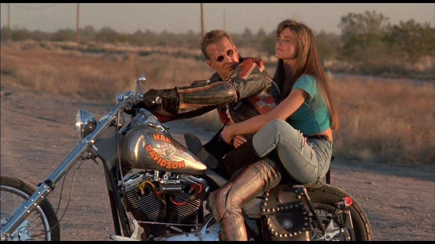

J'avais dix ans. C'était chez mon grand-père. Une cassette parmi d'autres dans le meuble sous la télé. L'image apparaît. Un type seul sur une moto. Une route. Le silence avant la musique. Puis une station service. Un braquage. Et un homme qui intervient sans qu'on lui ait rien demandé. La caissière lui demande son nom. Il répond. Harley. Harley Davidson. J'avais dix ans et je venais de comprendre ce que voulait dire être cool. Ce soir, on relance la cassette.

Harley Davidson et l'homme aux santiags — affiche française, 1991
Harley Davidson et l'homme aux santiags. 1991. Réalisé par Simon Wincer. Avec Mickey Rourke et Don Johnson. Un film que personne n'attendait. Deux acteurs que Hollywood commençait à oublier. Un budget correct pour un résultat que les critiques ont expédié en deux lignes. La jaquette VHS promettait de l'action, des motos, de la testostérone. Ce qu'on trouve à l'intérieur est différent. Plus mélancolique. Plus étrange. Deux hommes qui roulent vers quelque chose qu'ils ne savent pas encore nommer.
1991. Hollywood est en train de changer de peau. Les duos de choc des années 80 ont fait leur temps. Lethal Weapon, 48 Hours — ces films-là ont posé le modèle et tout le monde a essayé de le copier. MGM mise sur Rourke et Johnson. Deux hommes que le système commence à lâcher doucement. Rourke, cinq ans plus tôt, tout le monde le voyait comme la prochaine grande chose. Et puis les choix de films bizarres, la boxe, les rumeurs. Johnson sort de Miami Vice en 1989 avec une image qui colle à la peau et une carrière solo qui ne décolle pas vraiment. Simon Wincer les met ensemble sur une moto et personne, sur le plateau, ne sait vraiment ce que ça va donner.

Le film se passe en 1996. Pas le vrai 1996. Celui que Hollywood imaginait en 1991. Un Los Angeles légèrement de travers. Harley Davidson et Marlboro Man sont deux hors-la-loi sans ambition particulière. Mais leur bar favori va fermer. Et pour le sauver, ils décident de braquer un fourgon blindé. Ce qui devait être simple ne l'est jamais. Ce qui compte vraiment : l'espace entre les scènes. Les regards. Les silences.
Ce film n'aurait pas dû exister en 1991. Il appartient à une autre époque. Et Rourke et Johnson le savent. Pas leurs personnages. Eux. Il y a dans leurs regards quelque chose que le script n'a pas écrit. Une lassitude réelle. Une élégance fatiguée. C'est ça que le film a capturé sans le chercher. Pas une histoire de braquage. Un portrait.

Terminator 2 sort six mois après. Et tout ce que Rourke et Johnson incarnent — cette espèce de cool fatigué, de virilité un peu abîmée — ça devient soudainement invisible. Pas ringard. Juste invisible. Rourke fait peur aux studios. Johnson ne remplit plus les salles. Le film sort, fait un peu de bruit, disparaît dans les bacs. La jaquette reste dans les vidéoclubs quelques années. Et puis plus rien.
Parce que Rourke et Johnson ne font pas semblant. Il y a des films où tu vois les acteurs jouer. Là tu les vois exister. Cette façon qu'a Rourke de tenir son corps, de regarder les gens de côté — ça ne s'écrit pas dans un script. Le cinéma d'action aujourd'hui est propre, calibré, chorégraphié. Celui-là a des bords rugueux. Des silences qui durent une seconde de trop. C'est inconfortable parfois. C'est pour ça que ça reste.
Harley Davidson et l'homme aux santiags n'est pas un grand film. C'est mieux que ça. Dans les rayons perdus des vidéoclubs, il y en a des centaines comme lui. C'est pour eux qu'existe SOMEDAY. La cassette est dans le lecteur. On rembobine.
SOMEDAY — EP. 01